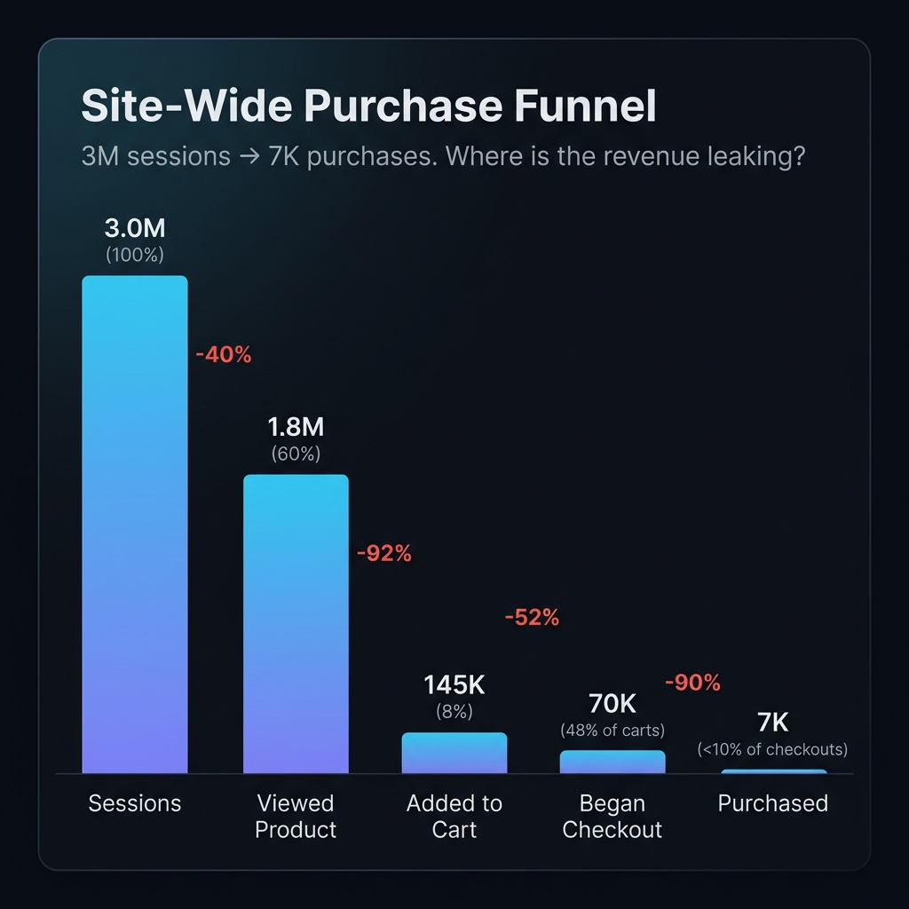
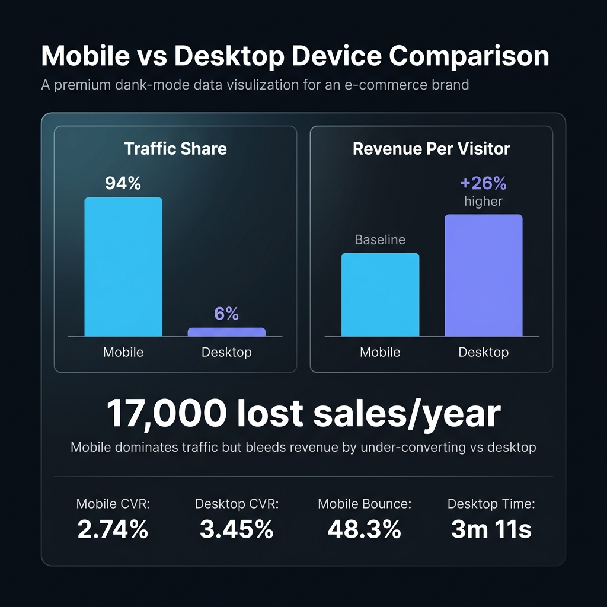
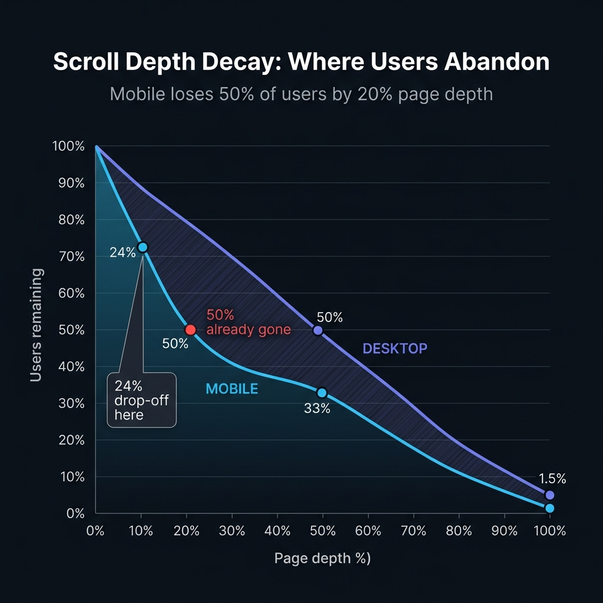
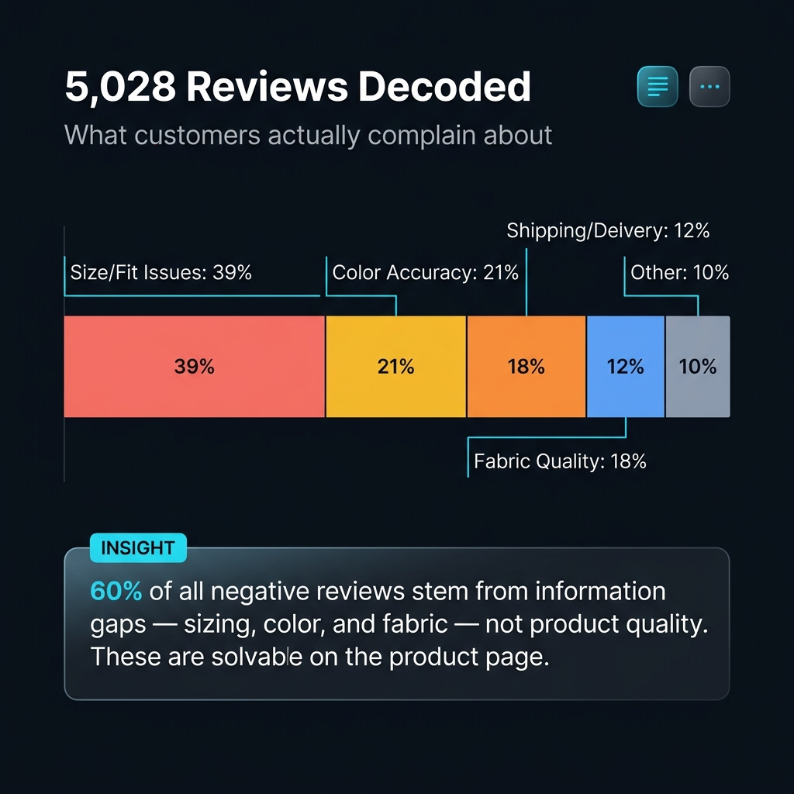
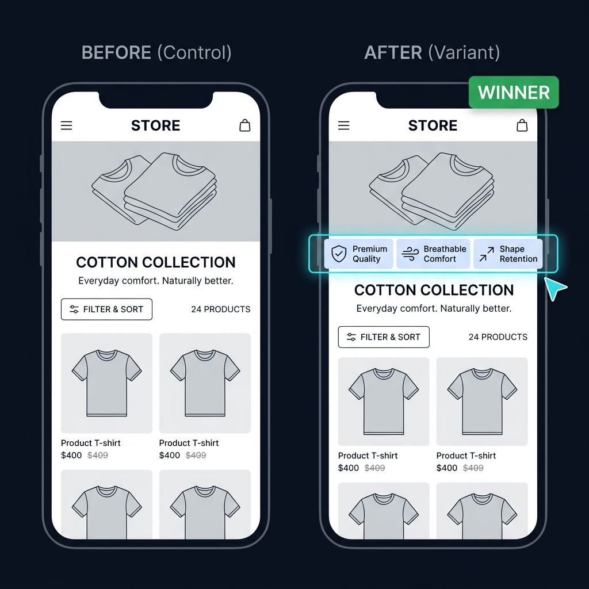
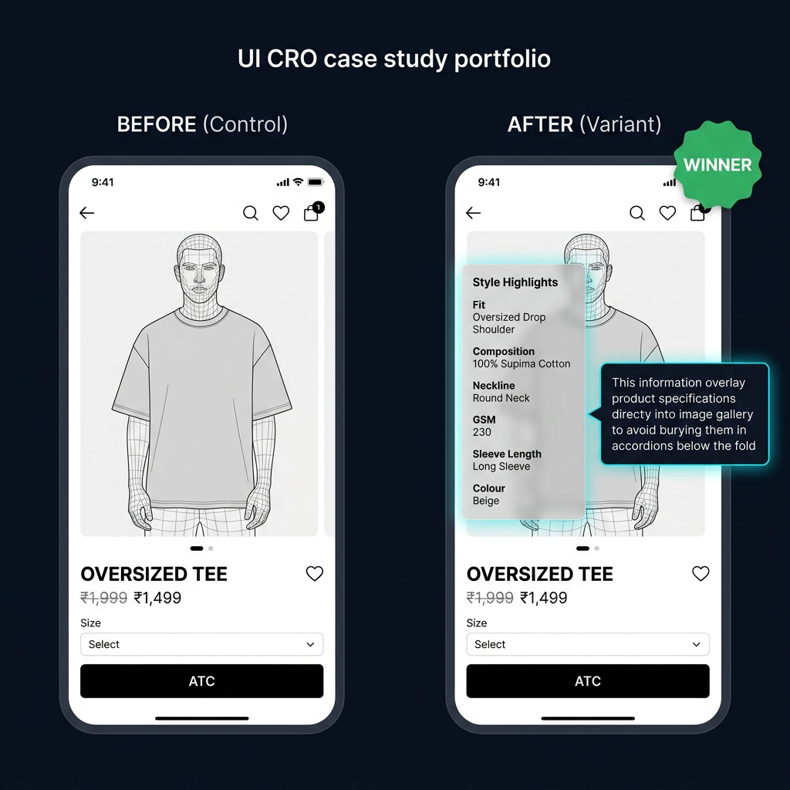
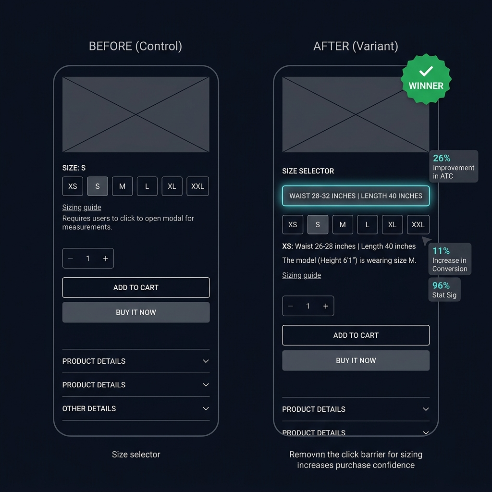
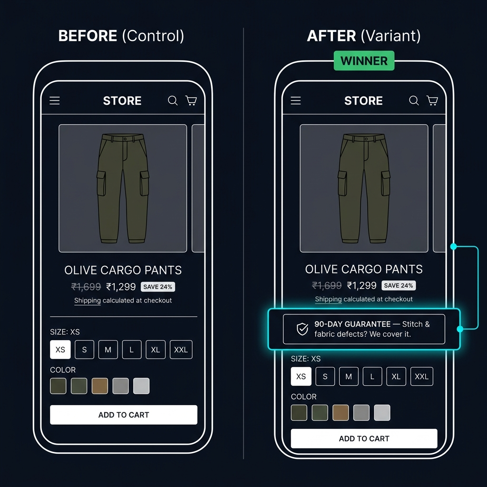
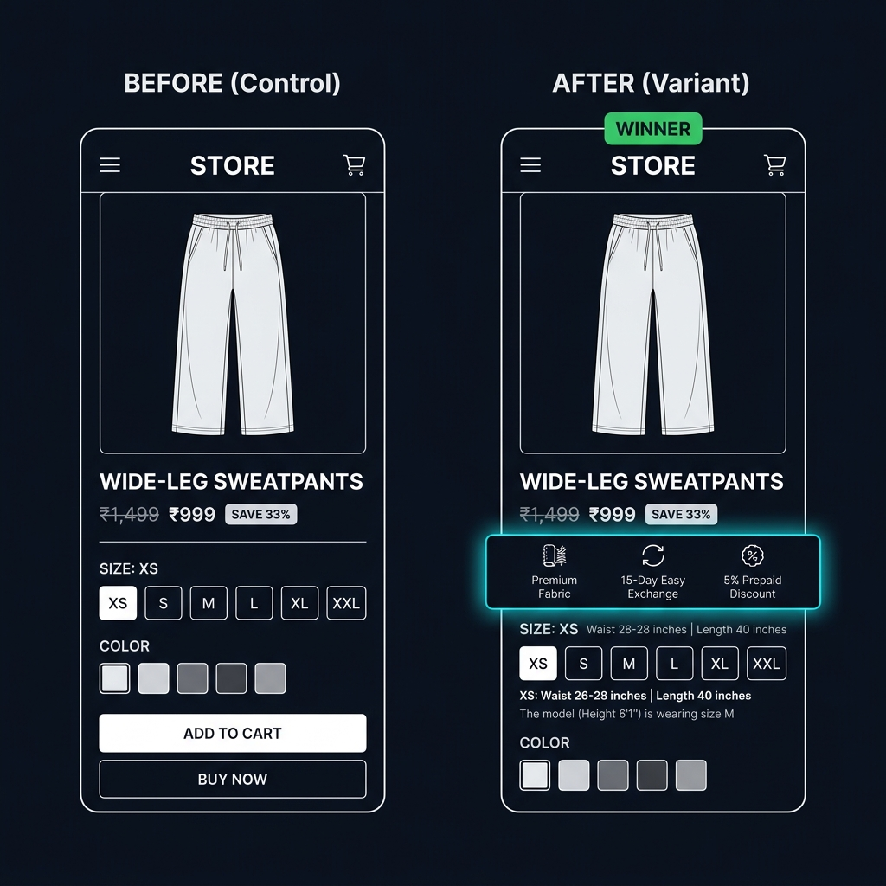

5,028 Reviews, One Real Problem
A high-volume Gen-Z streetwear brand processing 3M sessions/month. Everything looked healthy on the surface — strong brand, cultural relevance, paid traffic flowing. Under the hood: broken GA4 attribution, a third-party checkout severing the data pipeline, and customers leaving because the product page couldn't answer two questions: “Will this fit me?” and “Is the color really what I see?”
Phase 1: The Data Was Lying
The brand used a third-party checkout system that severed the GA4 session chain. Purchase events either didn't fire or fired without item data, attribution collapsed to direct / (none), and the revenue column in GA4 showed near-zero for campaigns clearly driving sales.
I also found 14 duplicate-firing tags in GTM — multiple triggers on the same interaction inflating every KPI by up to 2×. The team was making decisions on metrics that were literally doubling the real numbers.
✗ Before: Broken Pipeline
✓ After: Full-Funnel Attribution
The fix involved four parallel workstreams:
- Cross-domain continuity: Enabled the GA4 linker on both domains so session IDs and click IDs persisted across the checkout handoff.
- Purchase tagging on the Thank You page: Implemented the purchase event via the checkout platform's pixel manager with a standardized ecommerce data layer.
- Event deduplication: Built an order_id registry + event_id hashing system to prevent page-reload and SPA re-render duplicates.
- Consent Mode v2 + Enhanced Conversions: Hashed email/phone mappings from the data layer, standardized consent signals sitewide.
Phase 2: Understanding the Funnel
With clean data, I ran a full funnel audit. The headline: 1 in 40 product page viewers completed a purchase.

The problem wasn't checkout or payment. 92% of users who viewed a product never added it to cart. That's where the money was leaking — at the moment of product evaluation.
The Device Divergence

Scroll Depth: The Invisible Wall
100K+ mobile pageviews revealed: 50% of mobile users were gone by 20% page depth. Only 1.5% reached the bottom.

Core Web Vitals
Root causes: 780KB hero video on autoplay, duplicate JS bundles, 34% unused CSS, and 17 long tasks blocking main thread.
Phase 3: Mining 5,028 Reviews
The quant data showed where users dropped. To understand why, I mined every customer review — 5,028 total, published and unpublished.

60% of all negative reviews were about information gaps — sizing uncertainty (39%), color mismatch (21%), and fabric feel (18%). These weren't product quality problems. They were product page communication problems.
Phase 4: The 99-Test Pipeline
| Area | Change | Data Backing | Lift | ICE |
|---|---|---|---|---|
| PDP | Sticky ATC bar after first scroll | ATC only 1.1% taps; high scroll depth | +8% | 21 |
| PDP | Inline 3-question fit finder | 39% of 1★ reviews cite size mis-fit | +6% | 18 |
| PDP | Star rating moved above fold | <2% scroll to reviews currently | +4% | 20 |
| PDP | Daylight colour photo as hero | 21% of 1★ reviews cite colour issues | +3% | 18 |
| PDP | Fabric stretch 5s video loop | 32% of low reviews call fabric thin | +2% | 15 |
| Collection | Sticky filter bar | Filters 3.7% taps; filter users CVR 1.9% | +6% | 20 |
| Collection | Best-selling default sort | Sort-switchers convert 1.63% | +4% | 20 |
| Collection | Hero height reduction to 250px | 40% bounce before grid visible | +4% | 18 |
| Homepage | Exposed full-width search bar | Searchers CVR 3.97% vs 2.4% avg | +50% use | 19 |
| Homepage | Vertical reel hero | Static hero dead-taps at 25% | +3% CTR | 16 |
Showing 10 of 99 tests. Full pipeline covers PDP (15), Collection (10), Homepage (8), Cart (5), Navigation (4), and cross-functional experiments.
Phase 5: Testing — 9 Winners, ₹69M Annual Impact
The first test I shipped targeted the collection page, not the PDP. The premium cotton collection was showing reviews inline — the variant surfaced product USPs above the fold. It won, validating the core thesis: information surfaced early converts better than information buried deep.
From there, I ran 25+ tests over 7 months. Nine produced statistically significant winners, all implemented:
| Test | Area | Verdict | Monthly Revenue | Learning |
|---|---|---|---|---|
| Key Highlights (premium cotton) | PDP | Winner | ₹120K | Trust-driven highlights near the decision zone accelerate commitment |
| Details in Product Image | PDP | Winner | ₹895K | Key product info early in the image gallery helps users decide without scrolling |
| 3-Month Guarantee Badge | PDP | Winner | ₹247K | Even small reassurance signals lift revenue and perceived quality |
| Size Guide Redesign | PDP | Winner | ₹1.23M | Clearer sizing info improves confidence; placement and visibility are everything |
| Size Guide v2 (Reiteration) | PDP | Winner | ₹423K | Iterating on a winner extracts more value — the v2 added trust signals around sizing |
| Exposed Search Bar | Sitewide | Winner | — | Searchers convert 63% higher; making search visible doubled usage |
| Social Proof Badges | PDP | Winner | ₹981K | Zero-review products need social proof from other signals; badges fill the gap |
| 360° Product Rotation Videos | PDP/PLP | Winner | ₹1.51M | Users paused and engaged with 360 views; reduced bounce and increased purchase confidence |
| New Arrival Page Redesign | Collection | Winner | ₹354K | Every funnel step improved — proving the collection page was the bottleneck, not PDP |
Test Visuals: Before & After





Beyond CRO: AI Automation That Scaled the Wins
This engagement extended well beyond A/B testing. Once tests started winning, the real question became: how do you scale these results across 2,000+ SKUs without burning 6 months of manual work? The answer was automation.
Third-Party Checkout Data Layer
The brand used a third-party checkout that severed the GA4 ecommerce funnel. No begin_checkout, no add_shipping_info, no purchase event — all invisible to analytics. I wrote a custom JavaScript data layer that listens to the checkout iframe's postMessage events, maps them to GA4 ecommerce schema, and restores the full funnel via sessionStorage persistence across the redirect.
View the data layer on GitHub →
Automated Video Generation Pipeline
The 360° rotation video test was the biggest single winner (₹1.51M/month). Scaling it manually across the catalog would have taken weeks. Instead, I built a Python automation pipeline that takes product image sets as input and programmatically generates 360° rotation videos — consistent framing, standard rotation speed, export-ready for Shopify. This turned a single winning test into a production system that could process the entire catalog.
View the video automation on GitHub →
Metafield Architecture + A+ Content Framework
I built structured Shopify metafields for product attributes — fabric composition, GSM weight, fit type, care instructions — across 2,000+ SKUs. After the "Details in PI" test won (₹895K/month), I created the content framework specifying what information goes on which image slide and how the hierarchy maps to the review-driven anxiety signals uncovered in the research phase.
What This Engagement Taught Me
- Tracking work is invisible and essential. Two weeks of cross-domain fixes produced no test results — and made every subsequent test trustworthy.
- Reviews are a research instrument, not social proof. Mining 5,028 reviews revealed the brand's biggest barrier: information anxiety, not product quality.
- The first test should prove the thesis, not optimize a metric. Starting on the collection page — not the PDP — validated the information-surfacing hypothesis at the point of highest traffic and highest bounce.
- A winning test is the beginning — automation is the end. The 360° video test winning meant nothing until I built a Python pipeline to generate videos at scale and a metafield system to structure data across 2,000 products.
- Write code when it solves a CRO problem. A custom data layer for broken checkout attribution. A video generation script for scaling a winning test. The best CRO work isn't always in the testing tool.
- 140% ROI came from discipline, not luck. 9 winners out of 25+ tests. That's a ~36% win rate. The other 64% generated learnings that made the winners possible.